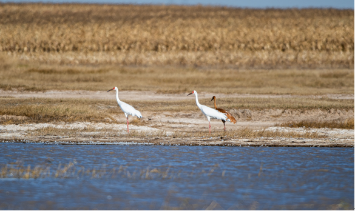

内蒙古科尔沁国家级自然保护区
Horqin National Nature Reserve of Inner Mongolia
内蒙古科尔沁国家级自然保护区位于内蒙古自治区兴安盟科尔沁右翼中旗的东部。保护区总面积119587公顷，保护区南北长约46公里，东西宽约44公里，科尔沁自然保护区涉及的行政区域包括科右中旗的新佳木苏木和高力板镇北部地区，是一个以保护科尔沁草原、蒙古黄榆、西伯利亚山杏疏林景观、鹤鹳类等珍禽及其栖息环境湿地为主的综合性自然保护区。
内蒙古科尔沁国家级自然保护区境内有鸟类17目42科225种，包括国家一级重点保护的鸟类有8种，有白鹳、黑鹳、丹顶鹤、白头鹤、白鹤、金雕、虎头海雕和大鸨8种，国家二级保护鸟类34种，列为国家保护的有益或者有重要经济、科学研究价值的鸟类有小鸊鷉、黑颈鸊鷉、凤头鸊鷉等163种，因此本区在保护鹤、鹳类等珍稀鸟类及其赖以生存的湿地环境的重要地位。两栖动物有1目4科7种；有爬行动物2目5科10种；分布有兽类6目15科43种。
